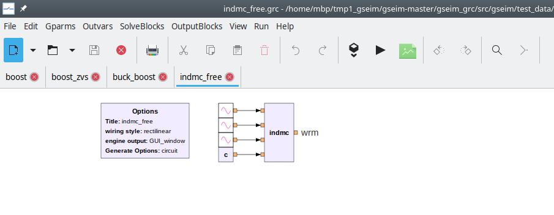
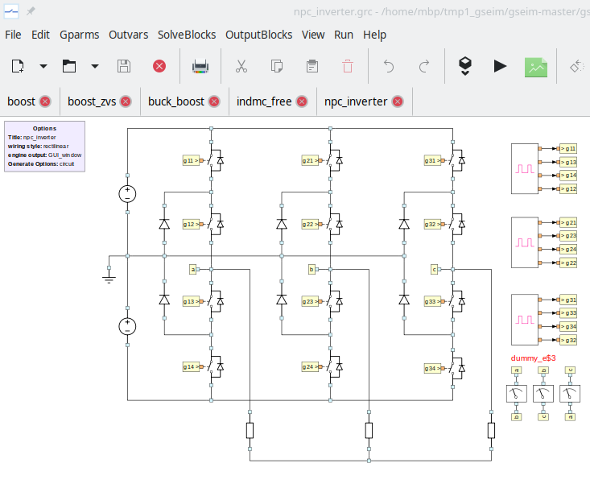

Getting Started¶
It is assumed that the user has successfully installed GSEIM on a linux computer. In this section, we will see how to run an existing GSEIM project (which is already available in the GSEIM distribution), and view the simulation results.
Free acceleration of induction motor¶
File menu \(\rightarrow\) Open \(\rightarrow\) Select the project file
~/gseim_grc/proj_grc/machines/indmc_free.grcas shown below.
The project schematic diagram will appear as shown below.
Click on
Generate circuit file. This would create the circuit file~/gseim_grc/gseim/output/indmc_free.inwhich is used by the GSEIM solver for solving the set of ODEs associated with the project schematic. Notice that a separate window opens to show the progress of this step. If the flow graph generation is successful, Program Completed will appear at the bottom of that window. Close the window.Click on
Run simulation. This invokes the solver which runs the simulation and creates the data files as specified for this project. Again, a separate window opens to show the progress made by the solver. The data files are created in the directory~/gseim_grc/gseim/output.Click on
View results. The plotting GUI would show up as a separate application, as shown below.
Click on
Load File, and select the circuit file~/gseim_grc/gseim/output/indmc_free.in. The data file created by GSEIM for this particular project will appear as shown below. Names of the variables stored in the data file are listed. Selecttimeas the x-axis andwrm(the angular speed of the motor) as the y-axis to obtain the plot shown below.
{kind=link}
{kind=link}
Neutral point clamped inverter¶
File menu \(\rightarrow\) Open \(\rightarrow\) Select the project file
~/gseim_grc/proj_grc/dc_to_ac/npc_inverter.grc. The project schematic diagram will appear as shown below.Click on
Generate circuit file. After the Program Completed message appears, close the window, and click onRun simulation. Close the window when the program is completed.Click on
View results. In the plotting GUI, click onLoad File, and select the circuit file~/gseim_grc/gseim/output/npc_inverter.in. Selecttimeas the x-axis andiaas the y-axis to obtain the plot shown below.We can view the Fourier components of the signal
iaby clicking onFourierin the plotting GUI and entering values fortStartandtEnd, as shown below. Note that the difference betweentStartandtEndis expected to be one period of the signal being analysed.The Fourier components for
iawill be displayed by the GUI.
{kind=link}
{kind=link}
{kind=link}
{kind=link}